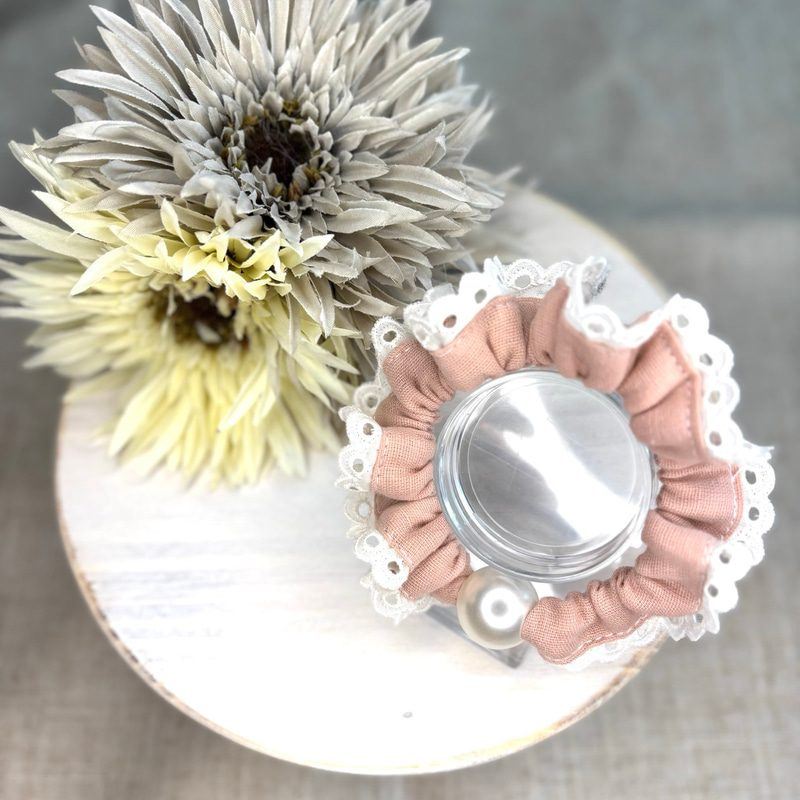

主役Signature
主役Signature
Pearl Frill Café Mat
パールフリル カフェマット
座るだけで絵になる、
うちの子の特等席。
オーガンジーの波打つフリルに、アイレットレースとパールを重ねた円形のマット。リバーシブルで、パープル・ミルキーピンク・ホワイト・ルージュピンクの4色。
¥5,300 税込
Handmade pet accessories — Saitama
上品さと写真映えにこだわった、
一つひとつ手作りのペットアクセサリー。
大人の飼い主さまと、愛犬・愛猫のために。
愛犬とのお出かけを、 もっと美しく、もっと特別に。



and AJ paw-pads は、上品さと写真映えにこだわったハンドメイドのペットアクセサリーブランドです。
カフェマットや首輪、リードなど、日常のお出かけからイベント、撮影シーンまで楽しめるアイテムを、一つひとつ丁寧に手作りしています。大人の飼い主さまと愛犬・愛猫に寄り添う、華やかで上品なデザインを。


※ Creema での実績（2026年11月時点）
色見本を押すと、写真とページのアクセントカラーが変わります。うちの子に似合う一色を探してみてください。
主役Signature
Pearl Frill Café Mat
座るだけで絵になる、
うちの子の特等席。
オーガンジーの波打つフリルに、アイレットレースとパールを重ねた円形のマット。リバーシブルで、パープル・ミルキーピンク・ホワイト・ルージュピンクの4色。
¥5,300 税込
商品一覧は Creema のショップページ でご覧いただけます。
写真を押すとその場で詳細が開きます。作品名から Creema の作品ページへ。価格は税込・2026年11月時点。
ご購入は Creema ショップ から（BASE ショップは準備中）。
掲載のサイズや色が合わないとき、多頭飼いでおそろいにしたいとき。Instagram の DM からお気軽にご相談ください。
お返事は Instagram の DM でお送りします。
ひとつひとつ手で縫い、手で仕上げる。そのぬくもりが、うちの子の毎日に溶け込んでくれたら嬉しいです。
サイズのこと、色のこと、「こんなのできますか？」という小さな疑問も、Instagram DM からお気軽にお声がけください。
— and AJ paw-pads
これまでに制作した作品や季節のアイテムです（現在は販売していないものを含みます）。
過去の作品は Instagram でもご覧いただけます。
07Follow新作はインスタから
新作・再販・季節限定アイテム、イベント出店のお知らせは Instagram がいちばん早く届きます。
Instagram をフォローCreema のショップからご購入いただけます。BASE ショップは準備中です。
掲載のサイズが合わない場合や、色違い・おそろいをご希望の場合は、Instagram の DM からご相談ください。首輪は首まわりを測ってからお選びください。
パールフリル カフェマットは M 直径約55cm / L 直径約60cm です。詳しくは各作品の Creema ページをご覧ください。
S 約23〜37cm / M 約28〜46cm です。お揃いのリード（長さ約100cm・幅約3.8cm）もあります。
出店情報は Instagram でお知らせしています。